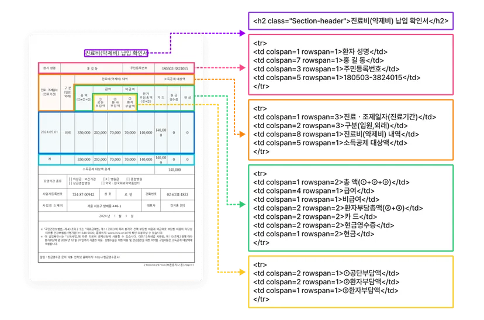
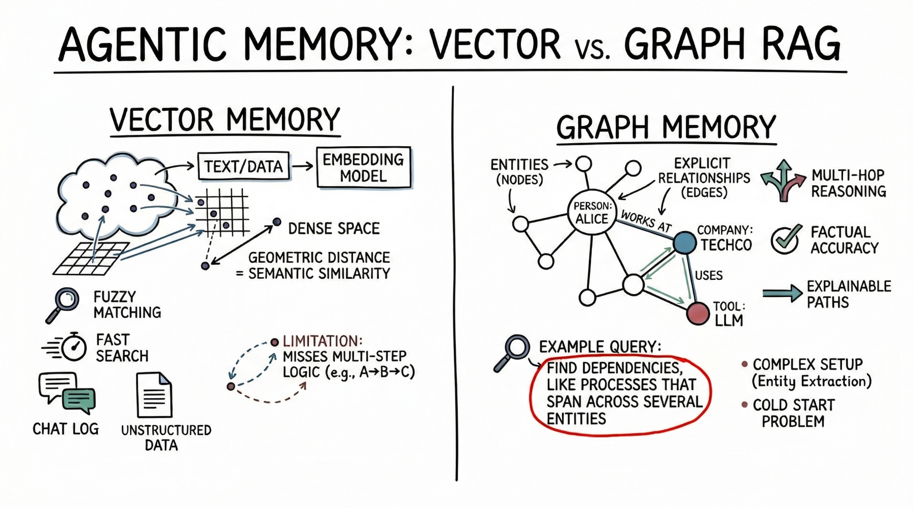
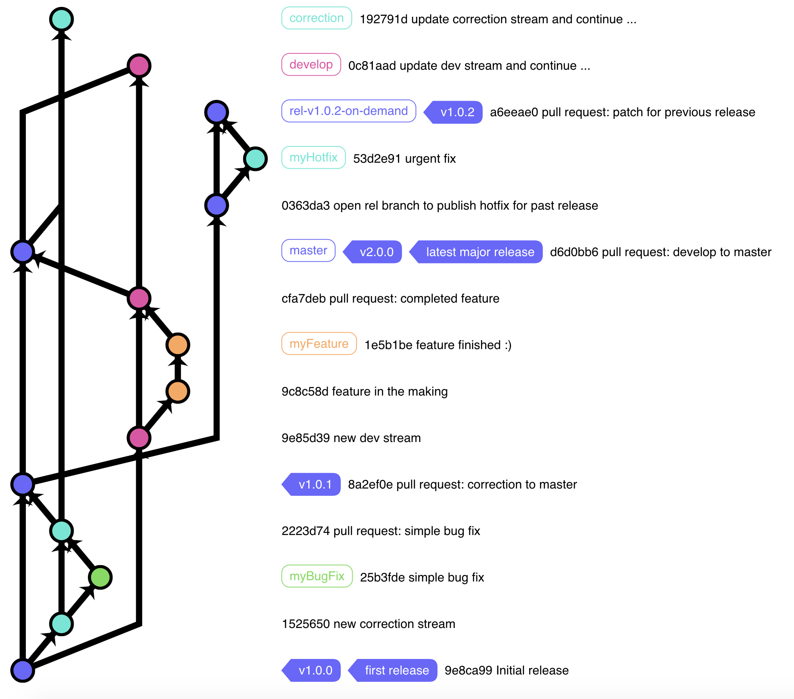
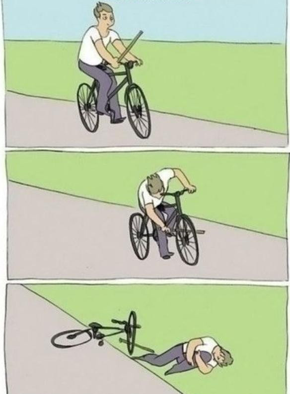

KOICA 해외사무소 · AI & DATA
AI·데이터 활용,
해외사무소의 일을 다시 설계하다
Claude Code · MCP · LLM Wiki · Skills · Plugins · Web · GitHub
Claude Code · MCP · LLM Wiki · Skills · Plugins · Web · GitHub
Claude Code · Codex
MCP 도구 · 업무 흐름
바이너리 → 텍스트
Brain dumping · LLM Wiki
Skill · Plugin
계획 모드 · 배포
GitHub · 원격 확인
KOICA 동료 프로젝트
계속 따라가는 방법
python3 -m http.server 8000
py -m http.server 8000
6부 · 선택 Cloudflare Wrangler는 macOS 13.5+ · Windows 11에서 실습합니다. Windows 10은 시연만 봅니다.
Claude Code와 Codex로 파일을 남기는 일부터
01Claude Code는
ChatGPT의 Codex에서도 같은 방식으로 일할 수 있다
AI와 함께 일한 결과가 다음 프로젝트의 재료가 됩니다.
말 잘하는 AI를 근거를 확인하는 업무 도구로
02AI에게 손을 달아주는 공통 연결 단자
도구 4개를 아는 것 ≠ 업무가 자동으로 좋아지는 것
입력 → 변환 → 검증 → 산출물 순서가 있어야 한다
보이는 원본을 검산 가능한 텍스트로
03사람에게는 한 장의 문서
AI에게는 해석해야 할 구조

파싱이 틀리면 답변도 자신 있게 틀릴 수 있습니다.
| 형식 | 잘하는 일 |
|---|---|
.md | 문서, 지침, Wiki, 보고서 |
.csv | 표, 목록, 집계, 검산 |
.txt | 원문, 로그, 단순 기록 |
.html | 브라우저에서 공유하는 결과물 |
텍스트 파일은
Brain dumping에서 LLM Wiki로
04완벽하게 분류한 뒤 기록하지 않는다
생각 · 링크 · 문서 · 메모를 먼저 남긴다
사용자는 쌓고, 정리와 색인은 LLM이 맡습니다.
“이 자료들로 LLM Wiki를 만들고 관리해줘.”
사용자는 raw data를 넣고, LLM이 parsing·indexing·관리를 맡습니다.
AI는 질문에 필요한 깊이만큼 단계적으로 조회한다
AI가 모르는 관련성을 사용자는 알고 있습니다.
| RAG | LLM Wiki |
|---|---|
| 질문과 가까운 문서를 검색 | 페이지와 링크가 눈에 보임 |
| 관련성을 시스템이 계산 | 사용자가 관련성을 추가·수정 |
| 검색 결과가 질의 때 나타남 | 관계가 지속적인 지식으로 남음 |

LLM이 정기적으로 찾아낼 것
사용자는 원자료를 넣고 판단합니다. 정리·색인·점검은 LLM이 반복합니다.
한 번 잘한 일을 동료도 재현하게
05프롬프트를 반복하지 말고 일하는 절차를 저장합니다.
Skill
오늘 배울 것
Wiki 답변 스킬은 이 과정을 배우기 위한 예시다
검증과 보완을 반복하면 버전관리의 필요성이 자연스럽게 생깁니다.
검증 질문
skills/이번 실습반복 가능한 Wiki 답변 규칙agents/선택전문 역할이 필요할 때만hooks/선택이벤트 자동화가 필요할 때만.mcp.json선택외부 도구 연결이 필요할 때만모든 플러그인에 Agent와 Hook이 있는 것은 아닙니다.
만든 사람의 컴퓨터에서만 작동 → 개인 자동화
동료가 설치하고 같은 결과를 재현 → 공유 가능한 역량
| 질문 | 선택 |
|---|---|
| 외부 데이터와 도구를 어떻게 연결할까? | MCP |
| Claude가 어떤 절차로 일해야 할까? | Skill |
| 이 능력을 어떻게 묶어 동료에게 전달할까? | Plugin |
현장 분위기와 남은 시간에 따라 진행하거나 건너뛴다
06지금까지 만든 Wiki와 스킬을 브라우저에서도 사용할 수 있게 하자
계획은 강한 추론에, 반복 실행은 빠른 모델에 맡깁니다.
“현재 테이블 구조를 설명해줘.”
“Wiki 페이지와 관계를 저장할 구조를 제안해줘.”
“예제 데이터를 넣고 국가별 건수를 집계해줘.”
npx wrangler pages deploy <폴더>“이 프로젝트의 보안 취약성을 검토해줘.
중요도순으로 설명하고, 수정안을 제시해줘.”
수정 후 다시 묻는다
“남아 있는 취약성을 다시 검토해줘.”
변경을 기록하고, 자리를 비워도 상태를 본다
07
변경 이력 · 되돌리기 · 실험
공유 · Issue · PR · Review · 배포
“README를 최신 상태로 고쳐줘.”
“열린 Issue를 우선순위별로 정리해줘.”
“변경점을 검토하고 커밋해줘.”
“교육자료를 웹페이지로 배포해줘.”
개발 코드가 없어도 업무의 기억과 공유점이 됩니다.
Issue
해야 할 일, 오류, 아이디어, 질문
Pull Request
실제 변경점, 검토, 승인, 반영
최근의 승부처는 일할 때의 생산성보다 자는 동안에도 일이 진행되는가입니다.

작은 불편함이 도구와 공공자산으로 이어진다
08공개했다고 바로 DPG는 아니다
9개 지표를 점검하며 DPG 후보에 가까워진다
최신 트렌드와 함의, 유즈케이스를 소개하는 계정을 따라간다
09텍스트 업데이트와 공개 대화를 중심으로
사용 사례·신기능·현장 반응이 빠르게 흐릅니다.
뉴스가 되기 전의 사용 장면과 해석을 따라갑니다.
불편함에 대해 LLM과 대화를 시작하고
반복을 Skill로 묶고
결과를 함께 쓰는 자산으로 축적합니다
{kind=link}